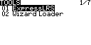
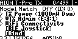
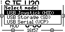
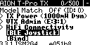
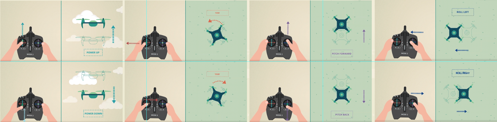

{% extends "article.html" %}

{% block title %}
<h1>遥控器的基本使用</h1>
{% endblock %}

{% block content %}
<style>
    img {
        border: 2px solid black;
    }
</style>
遥控器主要用于穿越机控制和模拟器飞行，本章节将会介绍以下内容：
<ol>
    <li><a href="#firmware">遥控器的固件</a></li>
    <li><a href="#channel">什么是通道</a></li>
    <li><a href="#switch">将开关映射到通道</a></li>
    <li><a href="#bind">对频</a></li>
    <li><a href="#vm">连接模拟器</a></li>
    <li><a href="#external_rf">安装高频头</a></li>
    <li><a href="#power">发射功率</a></li>
    <li><a href="#hand">穿越机的操作习惯</a></li>
    <li><a href="#charge">电池及充电</a></li>

</ol>

<h2 id="firmware">遥控器的固件</h2>
遥控器固件有很多种，推荐使用edgeTX固件搭配ELRS协议的开源遥控器。在连接接收机之前，应确保固件的大版本号与接收机大版本号相同，否则无法连接。<br>
图中3.3.1为ELRS固件版本，第一个“3”即为大版本号。
<br>

<h2 id="channel">什么是通道</h2>
通过通道可以控制穿越机做出相应的动作或者改变状态，比如两个摇杆通过占用一共4个通道控制飞机整体的运动方式，开关可以通过占用一个通道控制电机的旋转与停止，也可以通过占用一个通道控制飞行模式等。<br>
以现在流行的CRSF 协议为例：<br>
共有16个通道，其中4个通道分别控制横滚（A，也称Roll）、俯仰（E，也称Pitch）、油门（T，Throttle）、偏航（R，也称Yaw），1个独占的通道控制解锁。这意味着还有11个可以自由使用的通道。使用这些通道可以控制飞行模式、LED开关、舵机角度等。
<br>
只有将开关映射到通道后，遥控器才能控制穿越机的行为。

<h2 id="switch">将开关映射到通道</h2>
每个开关按钮的功能都是可以自定义的，意味着哪个顺手就可以用哪个。一般情况下一个开关可以映射到多个通道，但不能多个开关映射到一个通道。（可使用高级函数功能做到多个开关控制一个通道，但不推荐使用）<br>
操作步骤：
<ol>
    <li>进入模型设置菜单，找到MIXES页</li>
    
    <li>选择一个空通道，进入设置界面，选择Source一项</li>
    
    <li>按下想要映射到此通道的开关，将会自动设置成对应的开关</li>
    <li>确认保存</li>
</ol>

<h2 id="bind">对频</h2>
使遥控器和接收机配对连接的操作叫做对频（bind）。
操作步骤：
<ol>
    <li>进入系统菜单，进入ExpressLRS页</li>
    
    <li>飞机快速插拔电池三次，使接收机进入对频模式，此时接收机指示灯应两次快闪</li>
    <li>选择Bind</li>
    
    <li>接收机灯常亮，表示对频成功</li>
    <strong style="color: red">一个遥控器可以同时连接到多个接收机，因此连接过这个遥控器的接收机在和其他遥控器对频前，仅应该有一个处于上电状态。</strong>
</ol>


<h2 id="vm">连接模拟器</h2>
有USB和蓝牙两种方式。
<div style="padding-left: 2em">
    <h3 id="vm_1">USB方式</h3>
    <ol>
        <li>插入USB数据线</li>
        <li>选择USB Joystick</li>
        
        <li>在模拟器软件中选择USB手柄输入</li>
    </ol>
    <h3 id="vm_2">蓝牙方式</h3>
    <ol>
        <li>进入ELRS系统菜单</li>
        
        <li>选择BLE Joystick</li>
        
        <li>在运行模拟器软件的设备中打开蓝牙，选择Express Joystick配对</li>
        <li>在模拟器软件中选择蓝牙手柄输入</li>
        <strong style="color: red">应保持遥控器的蓝牙功能提示界面开启，否则蓝牙功能被关闭。</strong>
    </ol>
</div>

<h2 id="external_rf">安装高频头</h2>

<ol>
    <li>根据遥控器的高频头安装接口、通信协议、所需的遥控频段、发射功率等因素选择合适的高频头</li>
    <li>将高频头插入遥控器的高频头插座</li>
    <li>进入模型设置菜单，找到Internal RF选项，将其设置为OFF</li>
    
    <li>找到External RF选项，将其设置为高频头的协议</li>
    
    <li>如果选择的协议有参数可以设置，将会显示相关设置</li>
    
    <li>后续按照正常的对频等步骤操作即可</li>
</ol>

<h2 id="power">射频功率</h2>
即遥控器发射的遥控信号功率。<br>
修改发射功率操作方式：
<ol>
    <li>进入ELRS系统菜单</li>
    
    <li>选择TX Power一项</li>
    
    <li>设置功率后保存即可</li>
</ol>
根据工信部相关规定，<strong style="color: red">2.4GHz频段发射功率超过100mW时需要无线电台执照</strong>

<h2 id="hand">穿越机的操作习惯</h2>
按照操作方式和操作者的习惯，主要分为以下三种：
<ol>
    <li>美国手</li>
    左手控制油门和偏航，右手控制俯仰和横滚。
    
    <li>日本手</li>
    左手控制俯仰和偏航，右手控制油门和横滚。
    
    <li>中国手</li>
    左手控制俯仰和横滚，右手控制油门和偏航，与美国手相反。
</ol>

<br>
<h2 id="charge">电池及充电</h2>
遥控器一般使用的是2S锂电池，并且也应该时刻注意电池电压，电压过低时应立即充电。遥控器内置了充电电路。将充电器连接到遥控器的type-c充电口即可开始充电。开机状态下没有提示，但实际上也是在充电的。
{% endblock %}
